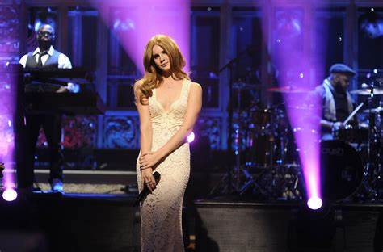

HER BACKGROUND
Lana Del Rey, born Elizabeth Woolridge Grant on June 21, 1985, in New York City, is an American singer, songwriter, and record producer known for her distinctive voice and cinematic style. She began her music career in the mid-2000s under her real name and released several projects before adopting the stage name Lana Del Rey in 2011. Her breakthrough came with the release of the single "Video Games," which garnered widespread attention for its nostalgic and melancholic tone, setting the stage for her debut album, Born to Die (2012). The album was a commercial success, featuring hit singles like "Summertime Sadness" and "Blue Jeans," and established her as a unique voice in the pop music landscape.
Lana Del Rey's music is characterized by its dreamy, cinematic quality, often incorporating themes of romance, nostalgia, and melancholy. Her second album, Paradise (2012), which is an extended play of Born to Die, continued this trend and was praised for its lush production and emotive lyrics. This was followed by Ultraviolence (2014), an album that marked a shift towards a darker and more introspective sound. The album, produced by Dan Auerbach of The Black Keys, received critical acclaim and included the singles "West Coast" and "Shades of Cool." Lana Del Rey’s exploration of new themes and sounds reflected her evolving artistry and deepened her connection with her audience.
In 2015, Lana Del Rey released Honeymoon, an album that continued her exploration of melancholic and cinematic themes, with standout tracks such as "High by the Beach" and "Music to Watch Boys To." The album's rich, orchestral arrangements and introspective lyrics reinforced her reputation as a distinctive and influential artist. Her subsequent album, Lust for Life (2017), featured collaborations with artists like The Weeknd and A$AP Rocky and explored themes of love and personal freedom against a backdrop of social and political commentary. The album's lead single, "Love," was particularly well-received and showcased her ability to blend pop with a more hopeful, yet still nostalgic, tone.

Achievements
-
Lana Del Rey has achieved remarkable success and acclaim throughout her career,
distinguishing herself as a uniquely influential figure in contemporary music.
She first captured widespread attention with her debut album Born to Die (2012),
which was a commercial triumph and featured the iconic single "Video Games,"
establishing her distinct cinematic and melancholic style. Her follow-up work,
including the extended play Paradise (2012) and the critically acclaimed albums
Ultraviolence (2014) and Honeymoon (2015), showcased her evolving artistry and
deepened her impact on the music scene. Ultraviolence was noted for its darker and
more introspective sound, while Honeymoon continued to build on her signature lush,
orchestral arrangements. In 2017, Del Rey released Lust for Life, an album that
explored themes of personal freedom and social commentary, featuring successful
collaborations with artists like The Weeknd and A$AP Rocky. The album's lead single,
"Love," was particularly well-received and highlighted her ability to infuse her
music with themes of hope and resilience. Her subsequent album, Norman Fucking
Rockwell! (2019), was a major critical success, earning Grammy nominations,
including Album of the Year, and was praised for its lyrical depth and sophisticated
production. The album’s standout singles, such as "Mariners Apartment Complex" and
"Doin’ Time," reinforced her position as a leading contemporary artist. In 2021, she
released Chemtrails over the Country Club, which continued to receive positive
reviews for its introspective and classic sound, further showcasing her growth and
artistic refinement. Del Rey's contributions to music have been recognized with
numerous awards and nominations, including Grammy nods, underscoring her significant
influence and enduring legacy in the industry. Her work is celebrated for its
evocative storytelling, cinematic quality, and unique voice, cementing her status
as a pioneering artist in modern music.
 Facebook
Facebook